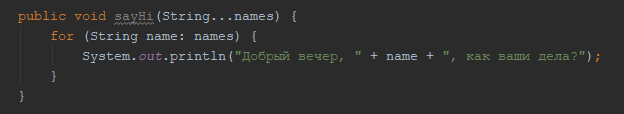

Java 8
Функционалльность и Декларативность
Декларативность - описание необходимого результата сразу на месте.
Java 8 привнесла в язык функциональный подход, реализованный по типу как это реализовано в функциональных языках, например JS. Фукнциональный подход заключается в том что наконец-то, несомтря на парадигму ООП, в java стало возможным рассматривать функции в отрыве от классов. Стало вомзможным передавать ссылки на функции и использовать колбэки. Ссылка на функцию содержит адрес не блока памяти со значением, а ссылку на сам код функции.
Анонимные классы и Лямбды
Лямбда-выражения – это новый способ сделать то же самое, что мы всегда могли сделать, но в более чистом и
менее многословном новом способе использования анонимных внутренних классов.
Чтобы понять зачем нужны
лямбда выражения нужно знать зачем нужны анонимные классы Анонимный класс - это класс без имени, который
нужен для того чтобы на ходу создать экземпляр интерфейса с реализацией его методов.
Например, в
конструктор в метод в качестве аргумента принимает значения типа Интерфейс. Мы на ходу пишем new
ИмяИнтерфейса, и реализацию его метода. То есть мы создали экземпляр класса, реализующего интерфейс, и
передали его в качестве аргумента.
Интерфейсы которые имеют только один метод в называются функциональные
интерфейсы.
Так вот всю данную конструкцию можно заменить на лямбда выражение. Просто потому что
компилятор поймет какой интерфейс мы будем реализовывать, потому что он ждет его в качестве аргумента,
поэтому нам не нужно его указывать. Так как инфтерфейс функциональный, а значит имеет один метод, название
метода тоже можем опустить. Типы параметров этого метода тоже изместы, значит тоже опускаем. Если метод
что-то возвращает то слово return тоже можно опустить. Лямбда-выражения могут использоваться только в том
случае, если вам нужно переопределить не более одного метода.
Стримы и лямбды
Stream - новый класс который появился в java 8, у него есть набор методов который в качестве параметров принимает функциональные интерфейсы, то есть на их место мы можем подсунуть лямбда выражения, то есть функции которые будут выполняться для каждого элемента коллекции.
Произвольное количество аргументов.
Произвольное количество аргументов. В данном случаем мы можем передавать в метод любое количество аргументов. В результате чего аргумент всегда будет являться массивом элементов даже если он всего один. Произвольный аргумент должен быть последним в сигнатуре метода.
SimpleDateFormat и Calendar
В Java имеется удобный класс SimpleDateFormat, который можно использовать для форматирования даты. Мы задаем формат даты, например через точки или слеши, или с минутами, а потом в качестве аргумента передаем объект типа Date.
Класс Date давно устарел, вместо него удобнее использовать Calendar. В нем реализованы календари различных наций, стран и вероисповеданий. Его очень удобно использовать с SimpleDateDormat.